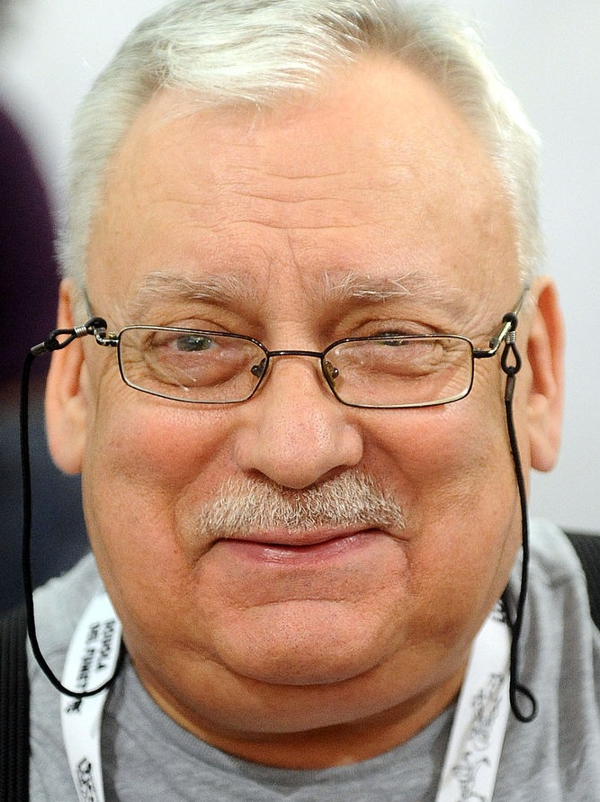
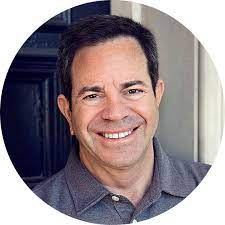
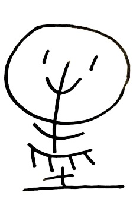
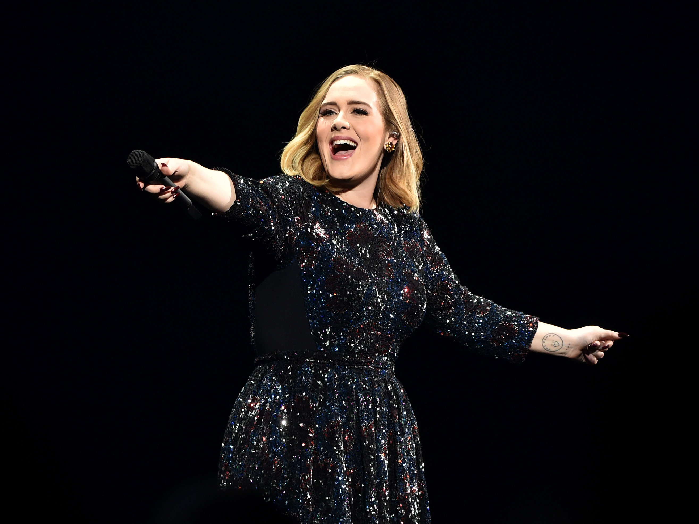
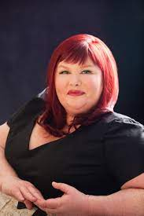

Oblíbení autoři žáků semináře IVT
Seznam oblíbených literárních, výtvarných, filmových a hudebních autorů žáků semináře IVT.
- Najetím ukazatelem myši na portrét autora zobrazíte jeho krátký životopis.
- Kliknutí na portrét autora Vás přesměruje na stránku se seznamem jeho děl.

Quentin Tarantino
Adam Koranda
Quentin Tarantino (1963) patří ke kultovním americkým filmovým tvůrcům. Navštěvoval kurzy herectví, začínal však jako scenárista. Prorazil celovečerní autorskou gangsterkou Gauneři (Reservoir Dogs, 1992), která získala přízeň publika stejně jako jeho další filmové hity Pulp Fiction: Historky z podsvětí (Pulp Fiction, 1994), Jackie Brown (1997) Kill Bill 1, 2 (2003, 2004), Hanební parchanti (2009) nebo Nespoutaný Django (Unchained Django, 2012). Za své snímky získal řadu ocenění.
Andrzej Sapkowski
Filip Jelínek
Andrzej Sapkowski se narodil v Lodži a jelikož má nadání na jazyky, tak po studiu vysoké školy pracoval v oblasti zahraničního obchodu. Svou první povídku publikoval v roce 1986 a již o dva roky později byl jedním z nejoblíbenějších spisovatelů fantasy v Polsku. Kromě knih píše i povídky, recenze, komentáře a fejetony, zejména pak do polských fantasy časopisů Fantastika a Magie a Meč (v orig. Fantastyka a Magia i miecz)
Jeffrey Bennet
Filip Rosický
Jeffrey Bennett holds a B.A. in Biophysics from the University of California at San Diego and an M.S. and Ph.D. in Astrophysics from the University of Colorado at Boulder. He specializes in mathematics and science education, writing for and speaking to audiences ranging from elementary school children to college faculty. His extensive teaching experience, which spans all levels from preschool through graduate school, includes having founded and run a private science summer school for elementary and middle school children and teaching more than fifty college classes in astronomy, physics, mathematics, and education. He has received numerous awards for his teaching and writing, including the American Institute of Physics Science Communication Award.

J.R.R. Tolkien
Johana Mayerová
John Ronald Reuel Tolkien byl anglický spisovatel, filolog a univerzitní profesor, nejznámější jako autor Hobita a Pána prstenů. Na Univerzitě v Oxfordu působil v letech 1925–1945 jako profesor staré angličtiny, v letech 1945–1959 pak jako profesor anglického jazyka a literatury. Byl význačným jazykovědcem a znalcem staré angličtiny a staré severštiny. Spolu s nejbližším přítelem C. S. Lewisem byl členem literárního diskusního klubu Inklings („Tušitelé“ nebo „Inkousťata“).[2] 28. března 1972 obdržel od královny Alžběty II. Řád britského impéria.

Andrew Lloyd Webber
Julie Žaliová
Dnes nejúspěšnější žijící muzikálový skladatel na světě se narodil v Londýně jako prvorozený syn do rodiny hudebního pedagoga a skladatele Williama Lloyda Webbera, po němž podědil své výrazné nadání. Už v dětství projevoval zájem o magický svět divadla a ve svém pokoji psal a inscenoval první naivní muzikály. Studia na Oxfordu opustil ve chvíli, kdy se definitivně rozhodl stát se skladatelem. K tomuto rozhodnutí výrazně napomohlo setkání s o čtyři roky starším libretistou Timem Ricem, které dalo v roce 1968 vzniknout prvnímu společnému muzikálovému dílu The Likes of Us (Ti, podobní nám) a dětské kantátě Joseph and the Amazing Technicolor Dreamcoat (Josef a jeho úžasný pestrobarevný plášť).

Douglas Adams
Lukáš Randák
Douglas Noël Adams (11. března 1952 Cambridge – 11. května 2001 Santa Barbara) byl anglický spisovatel, dramatik humoristických rozhlasových pořadů a hudebník, který proslul knižní sérií Stopařův průvodce Galaxií.
Mo Xiang Tong Xiu
Michal Zásměta
Mo Xiang Tong Xiu (墨香铜臭, Mò Xiāng Tóng Xiù) is the pseudonym of the author of the novel Grandmaster of Demonic Cultivation. Her three danmei (耽美, Dānměi) web novels were originally published online at the Chinese web novel site JJWXC, where they became extremely popular. Mo Xiang Tong Xiu's pseudonym originates from the fact that while she wished to study literature in college, her mother insisted she study economics. Her mother told her that she could smell the fragrance of ink in one hand and the smell of money in the other. 墨香 (Mò Xiāng) means 'black fragrance' and 铜臭 (Tóng Xiù) is a phrase meaning 'the stink of money.
Adele
Nela Hamerníková
Laurie Blue Adkins, MBE (* 5. května 1988 Londýn) je britská zpěvačka a skladatelka známá jen jako Adele. V roce 2008 převzala cenu BRIT Awards v kategorii Cena kritiků, která je udílená umělcům, kteří v té době ještě nevydali album. Debutová deska nazvaná 19 vyšla v lednu 2008 a dostala se na první místo prodejního žebříčku ve Velké Británii. Druhé album s názvem 21 se stalo nejprodávanějším albem tohoto století a prestižní hudební magazín Billboard ho označil za nejlepší album všech dob. Celosvětové vydání proběhlo 19. ledna 2011. Z desky vyšel také singl „Rolling in the Deep“. V roce 2012 přednesla svoji píseň „Skyfall“, za kterou obdržela Zlatý glóbus a Oscara. Alba její diskografie se na prvním místě nejprodávanějších desek udržely nejdéle v historii. Překonala tak Rolling Stones i Madonnu. Po tříleté odmlce se v roce 2015 vrátila s novým, již třetím studiovým albem 25, které ji ihned dostalo zpět na vrchol hudebního průmyslu. Píseň „Hello“ okamžitě obsadila první místa hudebních žebříčků a na YouTube dosáhla za pouhé 3 měsíce 1 miliardu zhlédnutí. Videoklip ke skladbě také drží rekord v největším počtu zhlédnutí na YouTube v prvních 24 hodinách od zveřejnění – 27,7 milionů. Později přibyl i rekord za nejrychlejší dosažení 1 miliardy zhlédnutí, a to za 87 dní od zveřejnění.

Andrzej Sapkovski
Petr Resch
Andrzej Sapkowski se narodil v Lodži a jelikož má nadání na jazyky, tak po studiu vysoké školy pracoval v oblasti zahraničního obchodu. Svou první povídku publikoval v roce 1986 a již o dva roky později byl jedním z nejoblíbenějších spisovatelů fantasy v Polsku. Kromě knih píše i povídky, recenze, komentáře a fejetony, zejména pak do polských fantasy časopisů Fantastika a Magie a Meč (v orig. Fantastyka a Magia i miecz) Mezi jeho novější díla patří „sága o Reinmarovi z Bělavy“, známější pod názvem Husitská trilogie, je to historická fantasy, která se odehrává v období husitských válek, především ve Slezsku a Čechách. Pro svůj košatý jazyk s množstvím latinských citátů a mistrovskou gradaci děje bývá přirovnávána ke Křižákům Henryka Sienkiewicze. Sapkowski zde projevuje skvělou znalost historických reálií (čerpal zejména z Polské kroniky Jana Dlugosze), v příběhu vystupuje mnoho historických osobností z tehdejšího Slezska, Uher a Polska. Podobně jako v jiných románech zde Sapkowski uplatňuje svou pověstnou ironii a skvělý smysl pro detail.
Cassandra Clare
Antonín Hejna
Judith Rumelt (* 24. července 1973 Teherán, Írán) je americká spisovatelka. Knihy vydává pod pseudonymem Cassandra Clare. Proslavila se fantasy hexalogií Nástroje smrti. Judith se narodila v Teheránu. Její rodiče Elizabeth a Richard Rumeltovi ale byli Američané. V současné době žije v Amherst, Massachusetts, se svým manželem a třemi kočkami. Nejdříve začala psát pod pseudonymem Cassandra Clairová Fanfiction na Harryho Pottera a Pána prstenů. Jmenují se The Draco Trilogy a The Very Secret Diaries. Později začala psát trilogii Nástroje smrti už pod upraveným pseudonym Cassandra Clareová. Tato trilogie se pak rozrostla celkem na 6 dílů. Ve svém vytvořeném světě zůstala a přišla s trilogií Pekelné stroje a vydala první dva díly trilogie Dark Artifices. Jedna z věcí typických pro Cassandru Clareovou je boření tabu. Ve světě, který zahrnuje Kroniky lovců stínů a k nim přidružené knihy, existují určitá pravidla a věci, které Spolek netoleruje nebo velice špatně snáší. Jedná se například o vztahy mezi lovci stínů a podsvěťany nebo homosexualitu. Dalo by se říci, že to, co Spolek toleruje a netoleruje, má být jakási alegorie na chování společnosti ve skutečném světě.